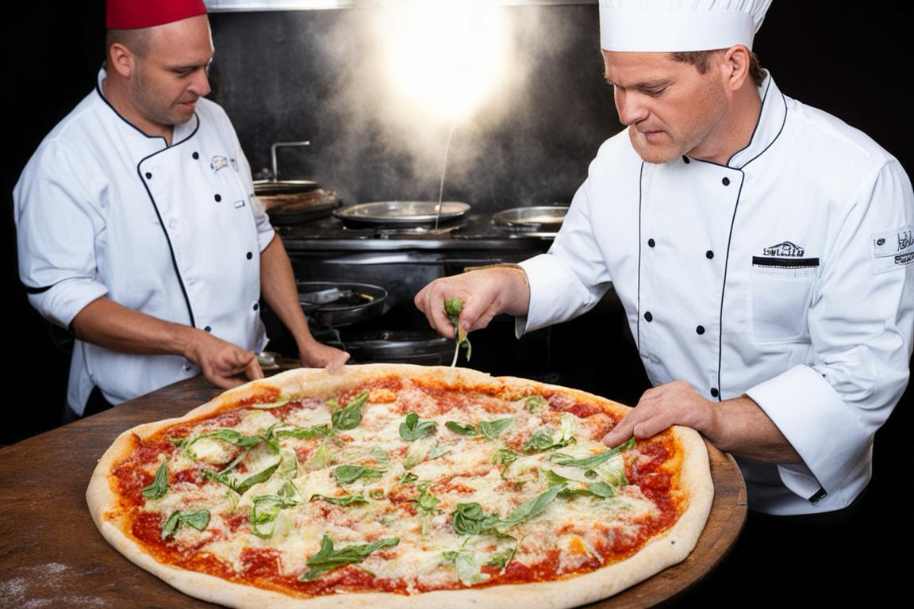
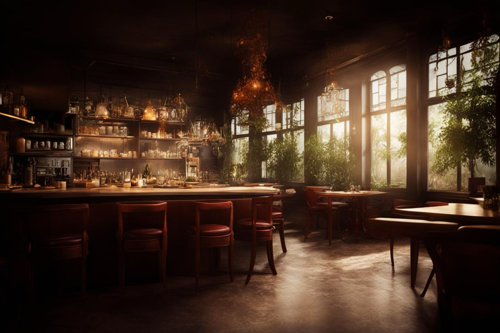

О нас
Добро пожаловать в BonaFide55 — настоящий уголок итальянской гастрономии в сердце Омска! Мы — команда энтузиастов, преданных искусству пиццы и уютной атмосфере.
Наша История
BonaFide55 не просто пиццерия, это место, где каждая пицца — это произведение искусства, созданное с любовью и тщательным отбором лучших ингредиентов. Наша история началась вдалеке от Омска, в тени итальянских оливковых деревьев, где наши повара обучались тайнам искусства приготовления настоящей пиццы.
Наш Подход
В BonaFide55 мы ценим каждый момент, который вы проводите у нас. Наше меню — это путеводитель по ароматному миру итальянской кухни, воплощенный в бесчисленных вариациях пиццы, начинок и закусок. Мы гордимся тем, что используем только свежие и качественные продукты, чтобы ваши вкусовые впечатления были неповторимыми.
Наша Атмосфера
BonaFide55 — это не просто место, где вы пробуете пиццу, это место, где вы ощущаете тепло домашней атмосферы. У нас каждый посетитель — это часть нашей большой пиццерийной семьи. Наши уютные залы и дружелюбный персонал создают идеальное место для семейных ужинов, встреч с друзьями или романтических свиданий.
Наша Миссия
Мы стремимся подарить вам уникальный вкус Италии, раскрывая перед вами всю палитру вкусов и ароматов, которые может предложить настоящая итальянская кухня. В BonaFide55 мы верим, что каждый гость заслуживает наилучшего, поэтому мы уделяем внимание каждой детали — от выбора ингредиентов до сервиса.
Приглашаем вас на увлекательное кулинарное путешествие в мир вкусов и наслаждений вместе с BonaFide55!